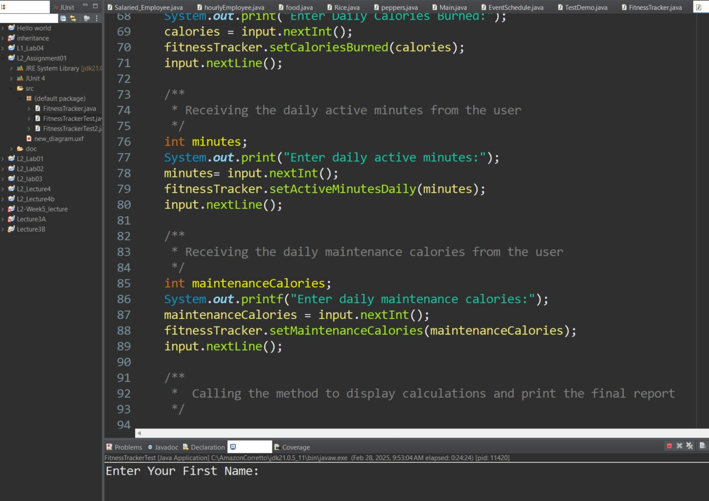

DATA VALIDATION AND TESTING PROGRAM
Developed a Java application using JUnit to automate unit testing for enhanced code reliability. Implemented data validation algorithms to ensure accurate data input and processing consistency. Integrated JUnit testing framework to verify edge cases and maintain optimal software performance. Optimized error handling within the program to detect data anomalies and prevent system failures.